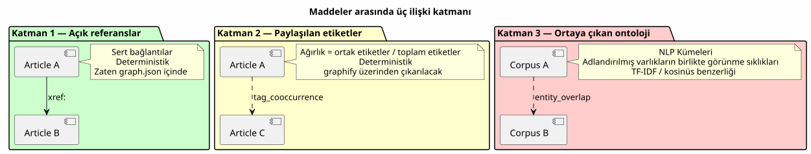
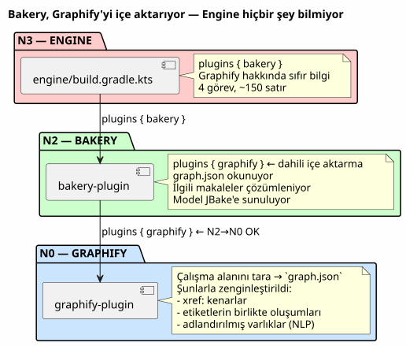
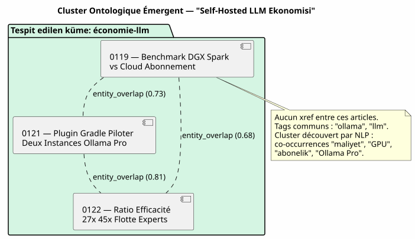

Öneri motoru olarak Knowledge Graph: Kronolojik «ilgili makaleler» özelliğini nasıl öldürdüm
Yayınlandı: 12 May 2026
- Sahne: 12 Mayıs Salı, 17:30
- Tanı: Hiçbir Şablonun Göremediği Üç İlişki Türü
- Çözüm: Bir Gradle Pipeline’ı, Sıcak Bir LLM Çağrısı Değil
- Ortaya Çıkan Ontoloji: Makaleler Birbirini Tanımadan Gruplandığında
- DAG Sözleşmesi: Kim Kimi İçe Aktarır
- Kazandıklarımız (Ve Kazanamadıklarımız)
- Perspektifler: Bir Kamu Bilgi Grafiği (Knowledge Graph) Olarak Blog
- Sonuç: Dosya Sistemi, Şablonun Bilmediği Şeyi Bilir
- Referanslar
pgvector’ın LangChain4j ile entegrasyonu hakkında bir makale okuyorsunuz. Sayfanın altında, JBake size « İlgili Makaleler » önerir. Tıklarsınız. Bu, … yapılandırması hakkında bir makaledir Kitty Terminal’in. İkisi arasındaki tek ortak nokta mı? Birbirlerinden daha kısa süre önce yayınlanmış olmaları on beş gün ara. Bu bir tavsiye değil. Bu, … kılığına girmiş bir takvimdir editör yazısı.
Sahne: 12 Mayıs Salı, 17:30
Makalelerimden birini yeniden okuyorum — codebase’i anlama aracı olarak Knowledge Graph hakkındaki makaleyi. İçerik yoğun: düğümler, kenarlar, topluluklar, PlantUML, onboarding. Bir makale odaklanmayı sağlayan 15 dakikalık okuma tekniği`graphify-gradle`, plantuml-gradle, ve graf topolojisi kavramları.
Sayfanın altındaki « İlgili Makaleler » bölümü bana şunları öneriyor:
-
Firebase Contact Form (0113) hakkında bir makale
-
Eager/Lazy mekanizması hakkında bir makale (0108)
-
Gradle script → plugin geçişi hakkında bir makale (0102)
-
Ollama Pro (0120) aboneliklerinin birleştirilmesi üzerine bir makale
Bu dört makaleden üçünün Knowledge Graph ile hiçbir ilgisi yok. Buradalar çünkü en son yayınlananlar onlar — zamansal yakınlık, değil anlamsal yakınlık.
Şablona bakıyorum`post.thyme`Lütfen çevrilmesini istediğiniz metni girin.
<!-- Articles connexes (liens internes SEO) -->
<th:block th:each="post,postStat : ${published_posts}">
<th:block th:if="${!post.uri.equals(content.uri) and postStat.index lt 4}">
...
</th:block>
</th:block>`published_posts`kronolojik bir listedir.`postStat.index lt 4`alır güncel gönderi olmayan ilk dört. Hepsi bu. Hiçbir mantık yok benzerliği. İçerik kavramı yok. Sadece bir döngü`for`kılığına girmiş öneri.
|
Bu bir JBake hatası değil. Bu, tüm sistemlerin varsayılan davranışıdır statik site oluşturucu: yazı listesi düzdür ve tarihe göre sıralanmıştır. Şablon, elindekiyle yapabildiğini yapıyor. |
Ama bu onu kabul etmek için bir neden değil.
Tanı: Hiçbir Şablonun Göremediği Üç İlişki Türü
Makale derlemem — 4 ayda 23 yazı — şu şekilde zengin bir yapıya sahip: kronolojik şablon tamamen geçersiz kılar:
-
Açık referanslar: kullanıyorum`xref:`makalelerimde yoğun bir şekilde.
Madde 0122, 0106 (knowledge graph) ve 0116 (compartimentage) referanslarına atıfta bulunmaktadır epistemik). Bu bağlantılar editoryal hard linking'dir — ben bu kavramları birbirine bağlamaya bilinçli olarak karar verdi.
-
Paylaşılan etiketler: her ürünün`:jbake-tags:`. Hakkındaki makale
Graphify + PlantUML (0105) a`gradle, graphify, plantuml, knowledge-graph`Lütfen çevirilecek metni sağlayın. Knowledge Graph (0106) hakkındaki makale knowledge-graph, graphify, plantuml. Yedi üzerinden üç ortak etiket — %43 örtüşme.
-
Birlikte geçen adlandırılmış varlıklar: « pgvector », « RAG », « embedding
dört farklı makalede birlikte görünüyorlar. « LangChain4j », Ollama », diğer altısında « Gradle eklentisi ». Bunlar etiket değil beyan edilenler — bunlar, yalnızca bir NLP’nin tespit edebilir.

Bugün, sitem bu üç katmanın hiçbirini kullanmıyor. Şunu kullanıyor sıfırıncı katman: bir Java listesindeki ekleme sırası.
Çözüm: Bir Gradle Pipeline’ı, Sıcak Bir LLM Çağrısı Değil
İlk cazibe, bake anında bir LLM çağırmak olurdu: "İçin bu makale için, küme içerisindeki en benzer üç makaleyi bul. Bunu yapmayın.
|
Her bir için bir LLM çağrısı`./gradlew bake`zaman, para ve build’inize determinizmini bozar. LLM’in yanıtı içerik değişmeden iki build arasında geçiş yapmak. CI’ınız şuna dönüşür tekrar edilemez, testleriniz flaky hale gelir. |
Çözüm deterministiktir: grafı önceden hesaplayan bir Gradle hattı benzerlik ve bunu şurada saklar`graph.json`. Şablon sonucu okur — asla bir hesaplama başlatmaz.
Mimari: Bakery, Engine’ı Değil Graphify’ı İçe Aktarır
En mimari açıdan en önemli nokta budur. Şu eğilim oluşabilir: iş birliğini … içinde yapılandırmak`engine/build.gradle.kts`: motor uygulaması tarama için graphify, pişirme için bakery ve engine ise arasındaki köprüyü kurar her ikisi de.
Bu bir anti-pattern’dir. Engine bir tüketici terminaldir — uygular eklentiler, herhangi bir iş mantığı uygulamaz. Kural şudur: ispat yükü tescilli eklentidedir.
Doğru Mimari — Bakery, Graphify’ı içe aktarıyor

DAG sözleşmesine uyuluyor: bakery (N2), graphify (N0) paketini içe aktarıyor, N2 > N0, herhangi bir ihlal yok. Engine (N3), bakery (N2) modülünü içe aktarıyor, N3 > N2, Tamam.
Engine’ın referans veren hiçbir kod satırı yok`graph.json`, relatedPosts, veya herhangi bir benzerlik kavramı. bakery uygular, nokta. La iş birliği bakery bünyesindedir.
Pipeline: Scan → Graphe → Template
İşte üç aşamalı tam işlem hattı:
-
Tarama (graphify) :`graphify-plugin`workspace’ü tarar. Onu
mevcut haliyle, zaten şu …'leri tespit ediyor`xref:`arasında`.adoc`ve ve sunar`graph.json`type` türündeki kenarlar gibi`reference`Lütfen çevirmek istediğiniz metni sağlayın.
Editörsel içerik için zenginleştirilir: JBake meta verilerini ayrıştır (:jbake-tags:, :jbake-description:) her bir`.adoc`blogun * Tag co-occurrence’larını hesapla → edges`tag_cooccurrence`ağırlıklı * TF-IDF aracılığıyla açıklamalardan adlandırılmış varlıkları çıkarır → edges`entity_overlap` * Bir bölüm ekle`blog_articles`içinde`graph.json`mevcut
// Extrait de l'enrichissement graphify pour le blog
fun enrichBlogSection(graphJson: File, blogDir: File): GraphJson {
val articles = blogDir.listFiles { f -> f.extension == "adoc" }
.map { parseJbakeMetadata(it) }
val nodes = articles.map { ArticleNode(it.slug, it.title, it.tags) }
val edges = mutableListOf<GraphEdge>()
// Couche 1 : xref (déjà fait par scanWorkspace)
// Couche 2 : co-occurrences de tags
for (a in articles) {
for (b in articles) {
if (a.slug == b.slug) continue
val common = a.tags.intersect(b.tags)
if (common.isNotEmpty()) {
edges.add(GraphEdge(
source = a.slug,
target = b.slug,
type = "tag_cooccurrence",
weight = common.size.toDouble() / (a.tags.size + b.tags.size)
))
}
}
}
return graphJson.copy(
blogArticles = BlogSection(nodes, edges)
)
}-
Bake (fırın/pastane) : … anında`./gradlew bake`, `BakeryPlugin`lit
`graph.json`ve her gönderi için ilgili makaleleri çözer.
// BakeryPlugin — résolution des articles connexes
fun resolveRelatedPosts(
currentSlug: String,
graph: GraphJson,
maxResults: Int = 4
): List<RelatedPost> {
val edges = graph.blogArticles.edges
.filter { it.source == currentSlug || it.target == currentSlug }
return edges
.sortedByDescending { it.weight }
.take(maxResults)
.map { edge ->
val relatedSlug = if (edge.source == currentSlug) edge.target else edge.source
graph.blogArticles.nodes.first { it.slug == relatedSlug }
}
}-
Şablon (
post.thyme) : JBake modeli artık bir map alıyor
düz bir kronolojik liste yerine yapılandırılmış.
<!-- Articles connexes basés sur le Knowledge Graph -->
<th:block th:if="${relatedPosts != null and !relatedPosts.empty}">
<section class="mt-5 pt-4 border-top">
<h2 class="h4 mb-3">Articles connexes</h2>
<th:block th:each="related : ${relatedPosts}">
<div class="mb-2">
<a th:href="${content.rootpath} + ${related.uri}"
th:text="${related.title}" class="fw-semibold"></a>
<br/>
<small class="text-muted">
<th:block th:each="reason,iterStat : ${related.reasons}">
<span class="badge bg-light text-dark"
th:text="${reason}"></span>
</th:block>
</small>
</div>
</th:block>
</section>
</th:block>Şablon aynı — verilerin nereden geldiğini bilmiyor. Sadece bakery ve JBake arasındaki sözleşme değişti:`published_posts`(liste kronolojik) haline gelir`relatedPosts`(graf ile ağırlıklandırılmış harita).
neden » rozeti (örn:`xref 0122`, `tag:gradle`, `cluster:pgvector-rag`) okuyucuya bu makalenin *neden* ilişkili olduğunu açıklayın. Bu değil sadece şeffaflık — bu, ... topolojisi üzerine bir pedagojidir kendi içeriğiniz. Lütfen çevrilecek metni sağlayın. |
Kronolojik Geri Dönüş
Si `graph.json`eksik (ön tarama olmadan yerel build, ilk dağıtım, graphify taramasını henüz entegre etmemiş olan CI), şablon zarifçe bozulmalıdır:
fun resolveRelatedPosts(currentSlug: String, graph: GraphJson?): List<RelatedPost> {
if (graph != null && graph.blogArticles != null) {
return resolveFromGraph(currentSlug, graph)
}
// Fallback chronologique — même comportement qu'aujourd'hui
logger.warn("[bakery] graph.json absent — fallback chronologique")
return resolveFromChronology(currentSlug)
}Varsayılan davranış, mevcut davranışla aynıdır. Le öneri motoru kademeli bir iyileştirmedir — bir kırıcı değişiklik.
Ortaya Çıkan Ontoloji: Makaleler Birbirini Tanımadan Gruplandığında
En ilgi çekici katman üçüncüsüdür: ortaya çıkan ontoloji. Birbirine atıfta bulunmayan, aynı etiketlere sahip olmayan ancak bilmeyerek aynı şeyden bahseden.
Somut bir örnek alalım. Külliyatımdaki üç makale:
-
0119 — Benchmark DGX Spark ve Cloud LLM Aboneliği
-
0121 — İki Ollama Pro Örneğini Yöneten Gradle Eklentisi
-
0122 — Verimlilik Oranı 27x 45x Uzman YZ Filosu
Bu üç makale arasında hiçbir xref yok. Etiketleri se sadece %20 oranında örtüşüyor (« ollama », ortak « llm »). Ancak hafif bir NLP açıklamalardaki analiz belirgin bir küme ortaya çıkarıyor: coût, abonnement, cloud », « GPU », « API key », « Ollama Pro », « verimlilik », « oran ».
Ontolojik bir küme oluştururlar: self-hosted LLM ekonomisi vs cloud. Bu küme hiçbir yerde tanımlanmamıştır. Korpusdan ortaya çıkmaktadır.

Bu ontolojik küme, şunun içinde bileşik bir kenar (edge composite) haline gelir`graph.json`Lütfen çevirmek istediğiniz metni sağlayın.
{
"source": "0119-benchmark-dgx-spark",
"target": "cluster:economie-llm",
"type": "entity_cluster",
"weight": 0.73,
"metadata": {
"clusterLabel": "Économie LLM Self-Hosted vs Cloud",
"commonEntities": ["coût", "GPU", "abonnement", "Ollama Pro", "ratio"],
"articlesInCluster": [
"0119-benchmark-dgx-spark",
"0121-ollama-pro-deux-instances",
"0122-ratio-efficacite-flotte-experts"
]
}
}NLP kasıtlı olarak hafif tutulmuştur — TF-IDF + cosine similarity şunlar üzerinde açıklamalar. BERT’e gerek yok, dil modeline gerek yok. Corpus 23 makaleden oluşmaktadır, benzerlik matrisi bir 50 KB boyutunda JSON dosyası.
|
NLP’nin gücü algoritmanın karmaşıklığından gelmez, ancak derlem boyutuna ve açıklamaların kalitesine bağlıdır. Bir `:jbake-description:`iyi yazılmış 150 karakterlik bir metin şundan fazlasını içerir TF-IDF için 3000 kelimelik tüm bir makalenin sinyali. |
DAG Sözleşmesi: Kim Kimi İçe Aktarır
Mimari disiplinin karşılığını verdiği nokta burasıdır. N0→N3 DAG’ı içinde tanımlı`engine/build.gradle.kts`basit bir kural veriyor: hiçbir proje üst seviye bir projeyi içe aktarmaz.
| Tüketici eklentisi | Eklenti içe aktarıldı | Tüketici seviyesi | İçe aktarılan seviye | Geçerli mi? |
|---|---|---|---|---|
bakery-gradle |
graphify-gradle |
N2 |
N0 |
✅ N2 > N0 — OK |
motor |
bakery-gradle |
N3 |
N2 |
✅ N3 > N2 — OK |
motor |
graphify-gradle |
N3 |
N0 |
✅ Teknik tamam, ancak kavramsal olarak yanlış — iş birliği bakery bünyesindedir |
Engine applique bakery. Bakery applique graphify. Hepsi bu. Eğer bir gün arama için codebase (N1) vector store’u eklemek istiyorum cross-corpus semantiği, bakery bunu da içe aktarıyor. Engine değişmiyor.
|
Desen şudur: N2 eklentisi kendi bağımlılıklarının merkezidir. Engine N3 bir hub değildir — hub’ları uygulayan bir terminaldir. |
Kazandıklarımız (Ve Kazanamadıklarımız)
Temel kazanç teknik değil, editöryeldir:
| Önce | Sonra |
|---|---|
İlgili makaleler = son 4 yazı |
İlgili makaleler = Knowledge Graph’taki ağırlığa göre ilk 4 |
Okuyucu RAG okuyor → Kitty Terminal önerisi |
Okuyucu RAG okuyor → pgvector, chunking, vector store önerisi |
Nedenine dair sıfır şeffaflık |
Rozet`xref 0122`, |
JBake standard, sıfır çaba, sıfır değer |
Deterministik, yeniden üretilebilir, test edilebilir Gradle hattı |
Okuyucu için herhangi bir öğrenme eğrisi yok |
Okuyucu, içeriğimin topolojisini keşfediyor |
Nelerin kazanılmadığı:
-
Bu "gerçek" bir öneri motoru değildir (işbirlikçi filtreleme yok
filtreleme, A/B testi yok, geri bildirim döngüsü yok)
-
Kalite, JBake meta verilerinin zenginliğine bağlıdır — eğer sizin
açıklamalar boş, TF-IDF hiçbir şey görmüyor
-
NLP çevrimdışı — yeni makaleler yalnızca şu zamanlarda kümeleniyor
bir sonraki tarama (doğru: build deterministik kalıyor)
Perspektifler: Bir Kamu Bilgi Grafiği (Knowledge Graph) Olarak Blog
Bu özellik daha geniş bir perspektif açıyor: ya`cheroliv.com` kendisinin bir knowledge graph navigable haline mi geliyordu?
Makaleler düğümlerdir. Etiketler topluluklardır. Xref’ler kenarlar. Okuyucu artık izole bir makale okumuyor — bir içinde geziniyor mevcut maddenin giriş noktası olduğu bilgi grafiği.
Kronolojik listenin değil, bir ana sayfa hayal edin son gönderilerden ziyade bir derlem haritası: ontolojik kümeler, pivot makaleler (en fazla kenara sahip olanlar), okuma yolları önerilenler (« Graphify hakkındaki makaleyi beğendiyseniz, ardından şunları okuyun bir anlama aracı olarak Knowledge Graph üzerindeki).
Bu artık bir blog değil. Bu bir semantik atlas.
Ve bu bir bilim kurgu değil. Le`graph.json`zaten mevcut. Sadece navigasyon arayüzü eksik.
Sonuç: Dosya Sistemi, Şablonun Bilmediği Şeyi Bilir
Bu Salı akşamı tasarladığım şey, bir sezgiselin yerini doldurmaktır tembel (kronolojik sıra) tarafından sadık bir temsiliyle corpusumun yapısı (Knowledge Graph).
Şablon`post.thyme`değişmiyor. Değişen şey, bizim … ona yemek verir. Öncesi: … ile sıralanmış bir Java listesi`date`. Sonra: üç analiz katmanından — xrefs, co-occurrences — gelen ağırlıklı bir grafik etiketler ve NLP aracılığıyla ortaya çıkan ontoloji.
Döngü tamamlandı. graphify çalışma alanını tarar. Bakery şunu okur grafiği oluşturur ve şablonu besler. Okuyucu öneriler görür ilgili. Ve orkestra şefi olan engine, … olduğunu bile bilmiyor tüm bunlar mevcut.
İşte doğru mimari budur. Her eklenti tek bir iş yapar. Ve tüketici terminalinin bunun nasıl olduğunu bilmesine gerek yoktur.